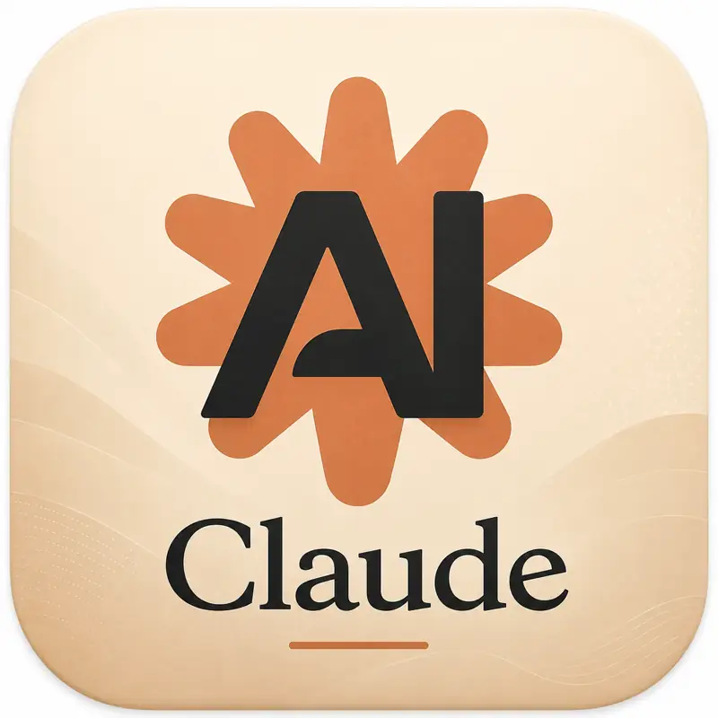
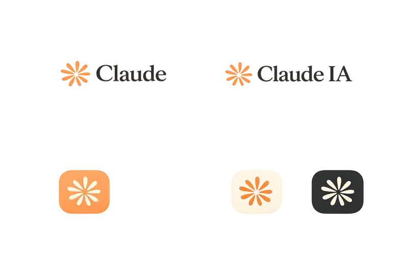

Claude es un asistente de inteligencia artificial desarrollado por Anthropic. Está enfocado en conversación, redacción, análisis de documentos y apoyo académico.
Ir a Claude OficialDesarrollador
Análisis y redacción
Conversacional

Ayuda a revisar documentos, resumir información y extraer ideas importantes.
Apoya en ensayos, reportes, correos, explicaciones y contenido escrito.
Responde preguntas de forma ordenada, natural y fácil de entender.
Está diseñado para mantener respuestas cuidadosas y enfocadas.